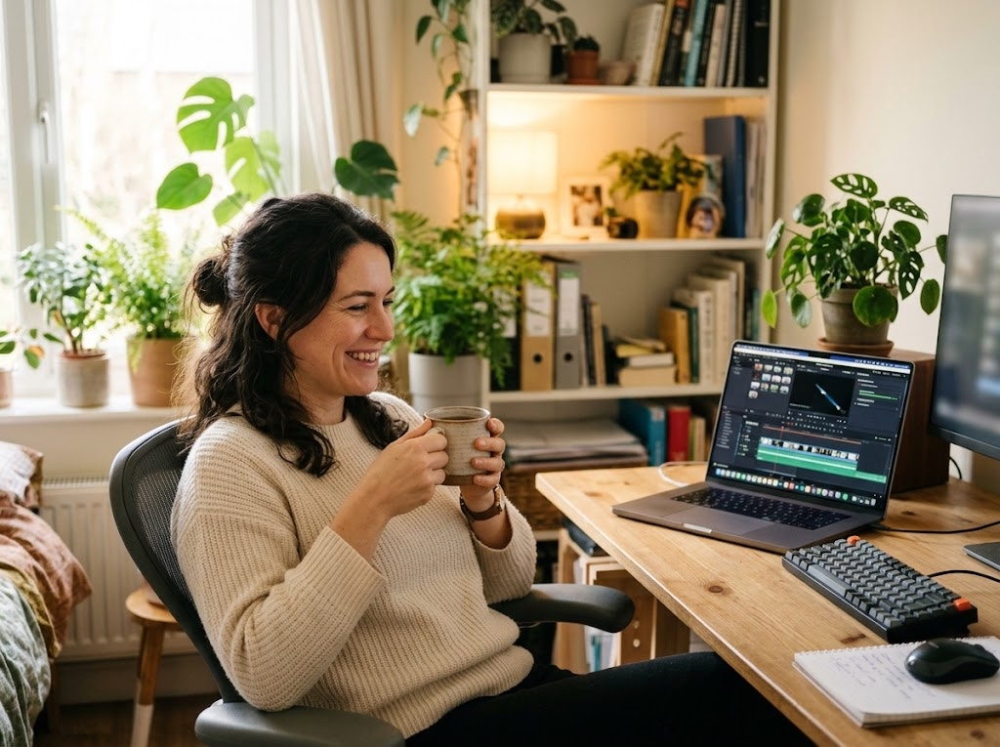
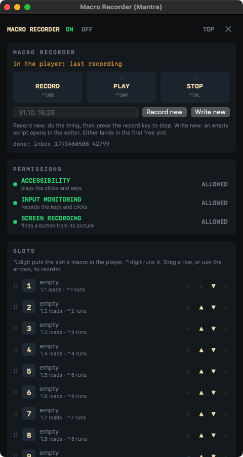

It watches what you do, the clicks, the keys, the waits, and writes it down as a script you can read. Change a line, play it back, give it a key. The script is AutoHotkey: what you learn here runs on Windows too.
Version 8 · macOS 14 or newer · Apple Silicon and Intel · 1.3 MB

What it does
; recorded 31.10. 10:42
Click 381, 644
Sleep 900
Send "^c"
Sleep 500
Send "Hello{Enter}"
if ClickImage("generate.png", 5) {
WaitImage "done.png", 60
}
The window: record, play, stop, the permissions it needs, ten slots on the digit keys.
Record, then read it
Every recording becomes a plain text script the moment it stops: Click, Sleep, Send. Nothing hidden in a binary file.
AutoHotkey v2 syntax
If, Loop, While, functions, arrays and maps, text and number functions. A script from Windows runs as it is, with ⌘ for the Windows key.
Clicks by picture
Snap a button once; ClickImage finds it on any screen and clicks it, even after the window moved.
Ten slots, your keys
⌥ and a digit loads a macro, ⌃ and a digit runs it. Every key can be changed, none is taken twice.
An editor that helps
It suggests the next command as you type, lists every command with its shape, and shows the line of an error.
Recalibrate
Window moved, resized, another screen? RECALIBRATE compares the stored view with a new picture of the window and moves every click to the same spot.
Menus and windows
MenuSelect presses a menu item by name; WinGetPos lets clicks follow a window wherever it is.
Install
- Open the downloaded
MacroRecorder.dmgand drag Macro Recorder (Mantra) onto Applications. - Open it. The first time, macOS says it cannot check the app: it is signed by its author, not through Apple's paid program. Go to System Settings › Privacy & Security, scroll down and press Open Anyway.
- Allow Accessibility (to play clicks and keys), Input Monitoring (to record them) and Screen Recording (to find a button by its picture). The app's PERMISSIONS panel shows each one and opens the right page.
- The ring icon in the menu bar opens the window, turns red while it records and green while it plays.
The keys
| ⌃⌥⌘R | record; press again to stop |
| ⌃⌥⌘P | play what is in the player; again to stop |
| ⌃⌥⌘. | stop whatever runs |
| ⌃⌥⌘N | a new macro: name it, then it records |
| ⌥1 … ⌥0 | put a slot's macro in the player |
| ⌃1 … ⌃0 | run a slot's macro now |
Privacy
Everything stays on your Mac. Macros are text files in ~/.mantra_macro/macros;
the app has no account, sends nothing anywhere and finds pictures on your own screen.